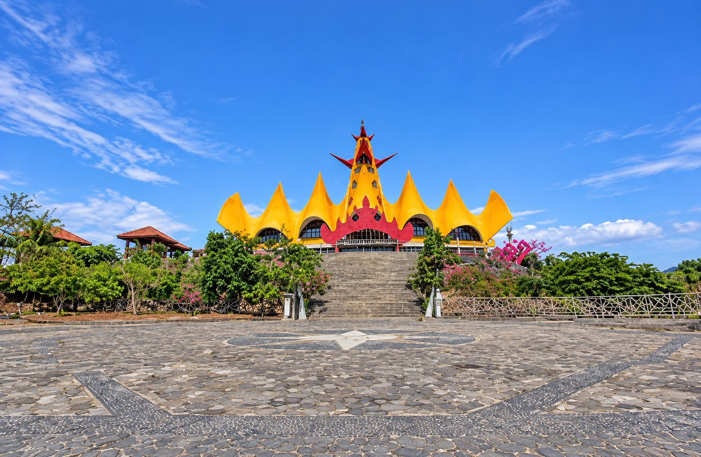
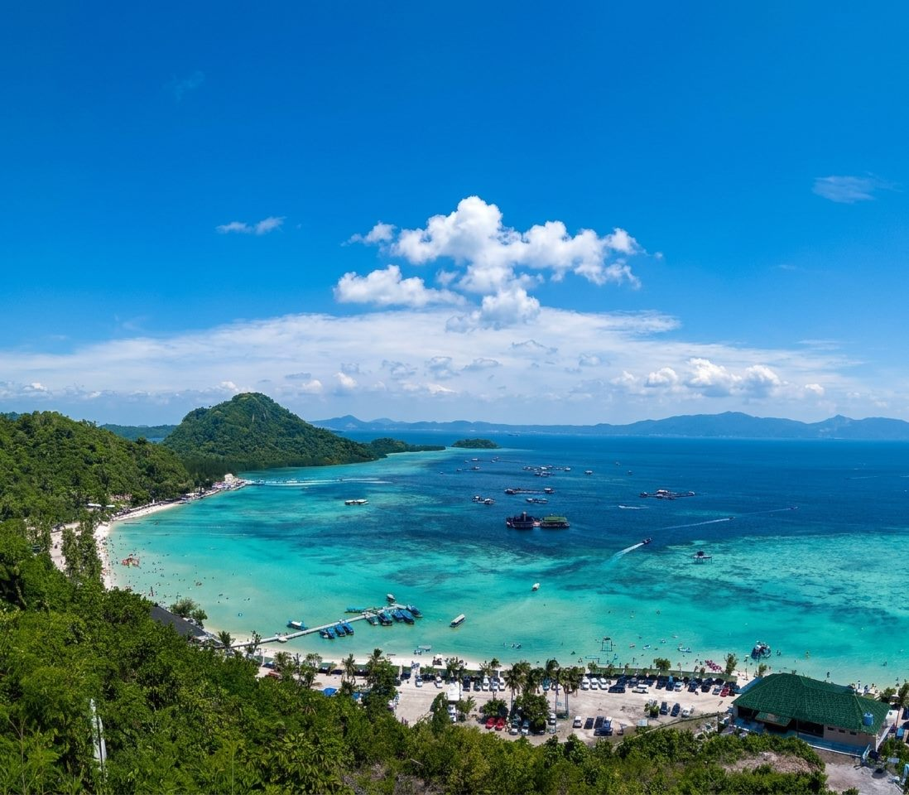
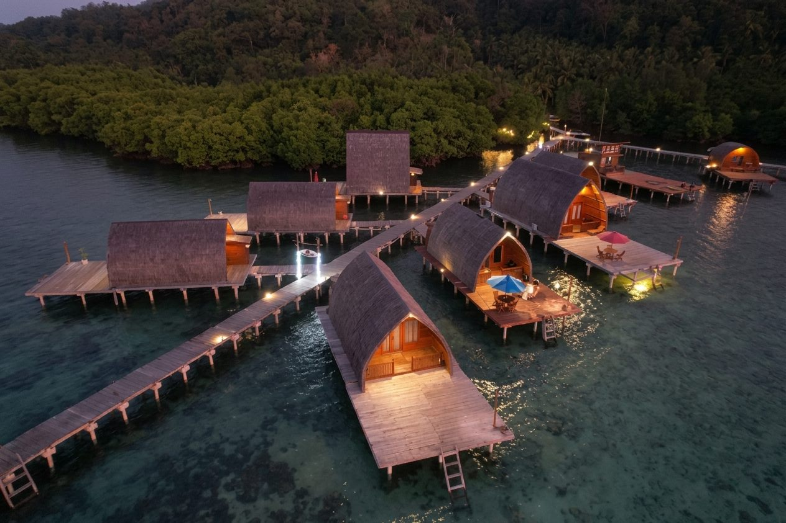
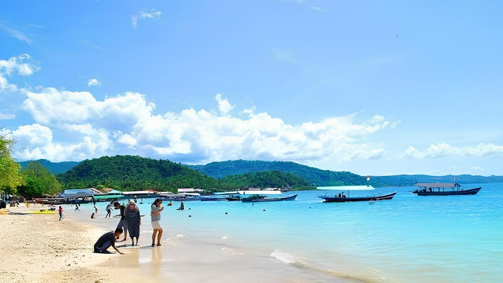
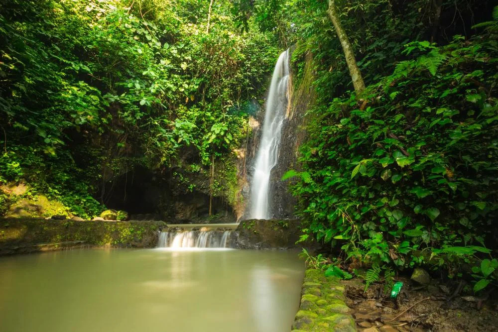
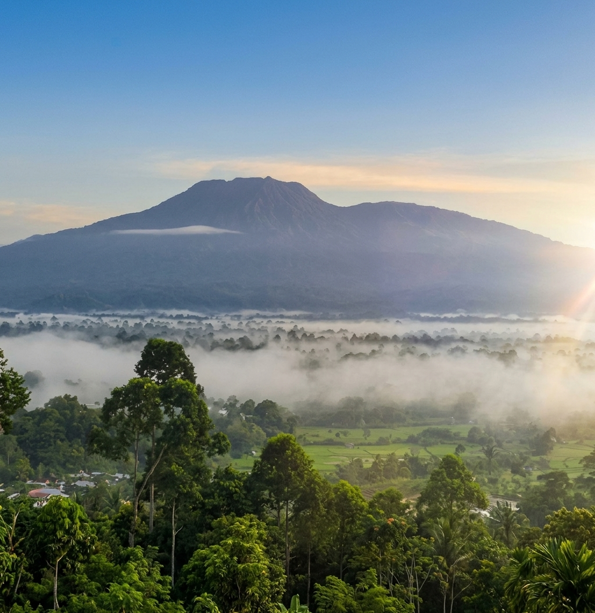
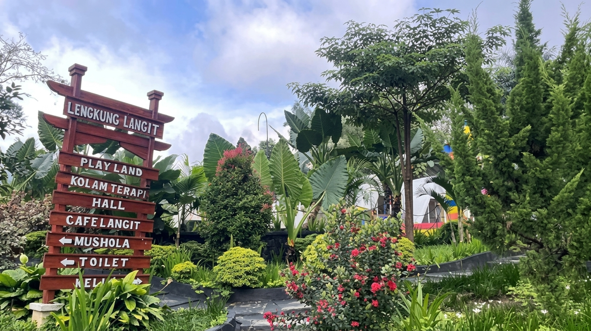
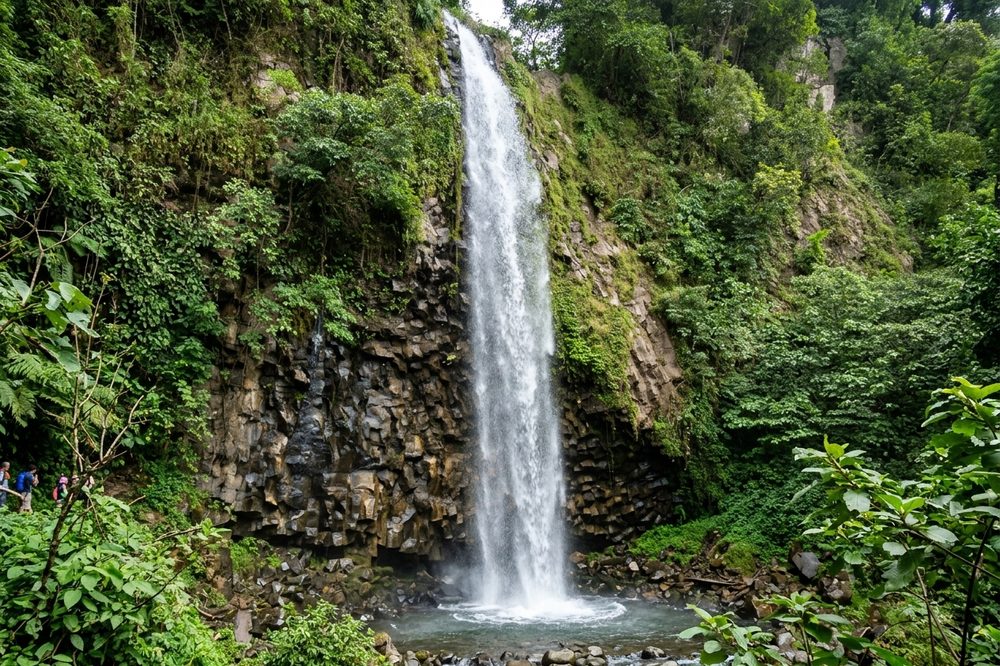

Ikon Lampung
Pesona Lampung,
dari pesisir hingga budaya.
Dari megahnya Menara Siger hingga jernihnya laut Pulau Pahawang, temukan sisi paling ikonik dari Sang Bumi Ruwa Jurai.
Air Terjun
Air Terjun Batu Putu adalah wisata air terjun sedalam 10 meter yang asri dan sejuk,
Gunung Terbesar
Gunung Tertinggi di lampung,memiliki 2 puncak dan situs budaya
Wisata Dengan Rating Tinggi jirr
Tempat yang indah cocok untuk keluarga dan juga tempat ini memiliki spot poto yang bagus
Air Terjun Tanah longsor hehe
air ini memiliki kualitas air yng dingin dan juga jernih bagus pemandangn yang sangt menawan
Spotlight Lampung
Dari ikon budaya sampai surga bahari, ini empat pengalaman khas Lampung yang sayang untuk dilewatkan.
Jelajahi Destinasi
Bakauheni, Lampung Selatan
Menara berlapis emas yang menjadi gerbang Lampung, berdiri di atas Bukit Siger dengan panorama Selat Sunda.
Lihat destinasi
Pesawaran, Lampung
Pulau dengan air sebening kristal, cocok untuk snorkeling, island hopping, dan menikmati terumbu karang.
Lihat destinasi
Pesawaran, Lampung
Deretan pondok kayu di atas air yang menghadirkan pengalaman menginap tenang di tengah laut.
Lihat destinasi
Pesawaran, Lampung
Deretan pondok kayu di atas air yang menghadirkan pengalaman menginap tenang di tengah laut.
Lihat destinasi
Pesawaran, Lampung
Air Terjun yang air nya sangat indah dan memiliki pemandangan yang indah
Lihat destinasi
Lampung Utara
Gunung Yang terletak di lampung utara dan memiliki pemandagan yang indah
Lihat destinasi
Lengkung Lagit2
Tempat wisata yang sangat cocok untuk poto poto dan juga tempat kumpul kumpul keluarga
Lihat destinasi
Destinasi Populer
Empat pengalaman khas Lampung, dari ikon budaya sampai surga bahari yang tenang.
Bakauheni, Lampung Selatan
Menara berlapis emas di atas Bukit Gamping ini menjadi gerbang Lampung sekaligus titik nol Sumatra. Buka foto untuk membaca sejarah lengkapnya.
Baca sejarahPesawaran, Lampung
Pulau dengan air sebening kristal di Teluk Ratai, cocok untuk snorkeling, island hopping, dan menikmati terumbu karang. Buka foto untuk membaca sejarah dan tips berkunjungnya.
Baca sejarahPesawaran, Lampung
Deretan pondok bambu di atas air yang menghadirkan pengalaman menginap tenang di tengah laut. Buka foto untuk melihat cerita dan tips menginapnya.
Baca sejarahPesawaran, Lampung
Pantai Mutun (dikenal juga dengan MS Town Beach) di Kabupaten Pesawaran, Lampung, memiliki berbagai daya tarik keindahan alam dan aktivitas wisata yang cocok untuk keluarga.
Baca sejarahPesawaran, Lampung
Air terjun batu putu terletak di Kabupaten Pesawaran, Lampung, dan memiliki pemandangan yang indah.
Baca sejarahPesawaran, Lampung
Gunung Pesagi memiliki pemandangan yang sangat spektakuler dan memiliki hawa dingin.
Baca sejarahPesawaran, Lampung
Lengkung Langit 2 memiliki pemandangan yang sangat spektakuler dan memiliki hawa dingin.
Baca sejarahPesawaran, Lampung
Tanah Longsor memiliki sejarah yang menarik dan pemandangan yang indah.
Baca sejarahTentang Lampung
Lampung adalah tanah surga tersembunyi di ujung Pulau Sumatra yang selalu memukau siapa saja yang datang. Keindahan alamnya berpadu dengan kehangatan budaya lokal, dari megahnya Menara Siger hingga bentangan pantai berpasir putih dan laut biru jernih di Pulau Pahawang.
Menjelajahi Lampung bukan sekadar menikmati pemandangan yang memanjakan mata, tetapi juga merajut kenangan di tanah Sang Bumi Ruwa Jurai yang kaya akan pesona.
Galeri
Sedikit cuplikan dari lanskap, laut, dan budaya yang menanti di Lampung.
Rencanakan Perjalanan
Tim kami siap membantu menyusun itinerari, transportasi, dan penginapan agar liburanmu lebih mudah dan berkesan.
Chat WhatsAppSejarah & Pesona
Landmark Provinsi Lampung yang berdiri di atas Bukit Gamping, Bakauheni. Bentuknya mengadaptasi siger, mahkota pengantin perempuan dalam adat Lampung, dan menjadi penanda titik nol Jalan Lintas Sumatra di ujung selatan.
Gagasan pendirian Menara Siger lahir dari keinginan menghadirkan ikon kebanggaan Lampung di gerbang selatan Sumatra. Pembangunannya dimulai pada tahun 2005 dan rampung pada tahun 2008 dengan biaya sekitar Rp15 miliar.
Menara ini dirancang oleh Ir. H. Anshori Djausal, M.T., arsitek asli Lampung. Pada 30 April 2008, Menara Siger diresmikan oleh Gubernur Lampung saat itu, Sjachroedin Z.P., dan sejak itu menjadi simbol pariwisata, budaya, serta identitas masyarakat Sang Bumi Ruwa Jurai.
Kehadirannya juga berkaitan dengan rencana pembangunan Jembatan Selat Sunda yang menghubungkan Bakauheni dan Merak. Menara Siger diposisikan sebagai gerbang dan titik nol perjalanan darat dari Sumatra, sekaligus pusat informasi wisata bagi seluruh kabupaten/kota di Lampung.
Sembilan kerucut kuning keemasan yang berderet melambangkan sembilan bahasa yang hidup dalam masyarakat Lampung. Kerucut bagian tengah dibuat lebih besar dan tinggi sebagai puncak menara, sementara ornamennya mengambil motif kain tapis.
Konstruksi memakai teknik ferrocement dengan jaring kawat menyerupai jaring laba-laba, sehingga bangunan lebih ringan namun tahan gempa dan terpaan angin laut. Bangunan menara setinggi 32 meter dengan enam lantai, sementara areanya berada di ketinggian sekitar 110 meter di atas permukaan laut.
Sejarah & Pesona
Pulau kecil di Teluk Ratai, Pesawaran, yang terkenal dengan laut jernih, terumbu karang dangkal, dan hutan mangrove. Pahawang kini menjadi salah satu destinasi bahari favorit di Lampung.
Pulau Pahawang berada di kawasan Teluk Ratai, Kabupaten Pesawaran. Kawasan ini dahulu dikenal sebagai kampung nelayan yang tenang, dengan kehidupan warga yang bergantung pada hasil laut dan hutan mangrove di sekitarnya.
Popularitasnya sebagai destinasi wisata tumbuh sejak sekitar awal 2010-an. Warga setempat kemudian mengembangkan homestay, penyewaan perahu, dan jasa pemandu snorkeling secara swadaya. Perkembangan wisata itu berjalan bersama upaya konservasi mangrove dan terumbu karang, sehingga Pahawang tetap dikelola oleh masyarakat lokal.
Kini Pahawang terdiri dari beberapa pulau, dengan Pahawang Besar dan Pahawang Kecil sebagai kawasan yang paling banyak dikunjungi wisatawan.
Air laut di Pahawang dikenal jernih dengan warna biru kehijauan. Di kedalaman beberapa meter, wisatawan bisa melihat terumbu karang dan ikan warna-warni hanya dengan snorkeling.
Aktivitas yang bisa dilakukan antara lain snorkeling, diving, island hopping, menyusuri hutan mangrove, menikmati sunset, dan mencicipi seafood hasil tangkapan nelayan setempat.
Sejarah & Pesona
Kawasan penginapan di Teluk Pahawang yang terkenal dengan pondok bambu di atas air. Cocok untuk menikmati suasana laut yang tenang, sunset, dan malam yang jauh dari keramaian.
Teluk Pahawang berada di kawasan Pulau Pahawang, Kabupaten Pesawaran. Awalnya kawasan ini hanya dilalui nelayan dan wisatawan yang datang untuk snorkeling pada siang hari.
Seiring meningkatnya kunjungan, warga setempat mulai membangun pondok-pondok bambu di atas air. Penginapan itu dikelola secara swadaya oleh keluarga lokal dan kini menjadi ciri khas Teluk Pahawang.
Pondok bambu berdiri di atas dermaga kayu yang menghubungkan beberapa unit penginapan. Dari teras pondok, pengunjung bisa langsung melihat laut, hutan mangrove, dan langit senja.
Fasilitas umumnya meliputi kamar sederhana, teras, area makan, dermaga, dan akses langsung untuk snorkeling atau memancing.
Sejarah & Pesona
Pantai Mutun (sering juga disebut MS Town Beach) adalah salah satu destinasi wisata bahari terpopuler dan paling mudah dijangkau dari pusat Kota Bandar Lampung. Pantai berpasir putih ini terletak di Desa Sukajaya Lempasing, Kecamatan Padang Cermin, Kabupaten Pesawaran, Lampung, dengan waktu tempuh sekitar 30 hingga 45 menit perjalanan darat dari Bandar Lampung.
Sejarah Pantai Mutun mencakup kisah legenda rakyat setempat mengenai asal-usul namanya serta perjalanan pengelolaan kawasan wisatanya yang sempat diwarnai dinamika sengketa lahan. Kawasan pesisir di Kabupaten Pesawaran ini bermula dari perkampungan nelayan tradisional sebelum berkembang menjadi salah satu destinasi rekreasi keluarga paling ikonik di Lampung.
dalam satu kawasan. Kombinasi pesona alam dan kemudahan sarana ini menjadikannya destinasi favorit bagi wisatawan lokal maupun luar daerah.
Pantai Mutun menawarkan perpaduan panorama pasir putih yang lembut, perairan teluk yang tenang, serta fasilitas rekreasi keluarga yang lengkap .
Fasilitas umumnya meliputi kamar sederhana, teras, area makan, dermaga, dan akses langsung untuk snorkeling atau memancing.
Sejarah & Pesona
Air Terjun Batu Putu adalah objek wisata alam yang terletak di kawasan Bandar Lampung, Provinsi Lampung. Terletak di tengah hutan yang lebat, air terjun ini menawarkan pemandangan yang memukau dan suasana yang tenang.
Menurut cerita yang dimuat dalam sumber wisata lokal, nama Batu Putu berasal dari sebuah batu di atas bukit yang bentuknya terlihat seperti terputus. Dalam bahasa Lampung, kata putuk berarti putus.
Air terjun ini memiliki ketinggian sekitar 20 meter berdasarkan penelitian yang diterbitkan dalam Jurnal Belantara tahun 2023. Lingkungannya masih memiliki pepohonan hijau dan suasana alam
Air Terjun Batu Putu memiliki pesona alam yang masih asri dengan air yang jernih dan menyegarkan. Dikelilingi pepohonan rindang dan perbukitan hijau, tempat ini menawarkan suasana sejuk dan tenang meskipun lokasinya tidak jauh dari pusat Kota Bandar Lampung.
yang membuatnya menarik untuk dikunjungi. Pengunjung dapat menikmati keindahan air terjun alami dengan aliran air yang segar serta pemandangan bebatuan alami di sekitarnya. Terdapat kolam alami yang dapat digunakan untuk berenang dan bermain air.
Sejarah & Pesona
Gunung Pesagi adalah objek wisata alam yang terletak di kawasan Kabupaten Lampung Barat, Provinsi Lampung. Terletak di tengah hutan yang lebat, gunung ini menawarkan pemandangan yang memukau dan suasana yang tenang.
Gunung Pesagi memiliki nilai sejarah dan budaya yang sangat penting bagi masyarakat Lampung. Gunung ini dipercaya sebagai tempat asal-usul nenek moyang masyarakat Lampung,.
khususnya yang berkaitan dengan kawasan Sekala Brak di Lampung Barat. Menurut cerita turun-temurun, kawasan di sekitar Gunung Pesagi menjadi tempat awal berkembangnya peradaban masyarakat Lampung.
Gunung Pesagi memiliki pesona alam yang sangat indah dengan panorama pegunungan yang memukau dan udara sejuk khas dataran tinggi.
Kawasan gunung ini dikelilingi hutan yang masih asri serta berbagai jenis tumbuhan alami. Dari puncaknya, pengunjung dapat menikmati pemandangan perbukitan, hamparan alam Lampung Barat,
Sejarah & Pesona
Lengkung Langit adalah objek wisata alam yang terletak di kawasan Kabupaten Lampung Barat, Provinsi Lampung. Terletak di tengah hutan yang lebat, gunung ini menawarkan pemandangan yang memukau dan suasana yang tenang.
Lengkung Langit memiliki nilai sejarah dan budaya yang sangat penting bagi masyarakat Lampung. Gunung ini dipercaya sebagai tempat asal-usul nenek moyang masyarakat Lampung,.
khususnya yang berkaitan dengan kawasan Sekala Brak di Lampung Barat. Menurut cerita turun-temurun, kawasan di sekitar Gunung Pesagi menjadi tempat awal berkembangnya peradaban masyarakat Lampung.
Lengkung Langit 2 memiliki pesona wisata yang menarik dengan pemandangan alam perbukitan dan panorama Kota Bandar Lampung dari ketinggian
Pengunjung dapat menikmati keindahan Teluk Lampung, suasana pepohonan yang hijau, serta udara yang sejuk.
Sejarah & Pesona
Tanah Longsor adalah objek wisata alam yang terletak di kawasan Kabupaten Lampung Barat, Provinsi Lampung. Terletak di tengah hutan yang lebat, gunung ini menawarkan pemandangan yang memukau dan suasana yang tenang.
Tanah longsor merupakan bencana alam yang sudah beberapa kali terjadi di wilayah Provinsi Lampung.
Kondisi geografis Lampung yang memiliki perbukitan, lereng curam, dan curah hujan tinggi menyebabkan beberapa daerah rentan mengalami longsor.
Kawasan tanah longsor memiliki bentang alam yang terbentuk dari perubahan kondisi permukaan tanah dan lereng.
Beberapa kawasan bekas longsor dapat memperlihatkan tebing alami, lapisan tanah, serta pemandangan perbukitan di sekitarnya..